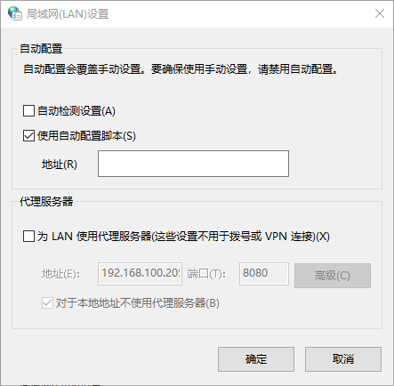

系统代理¶
Windows 10¶
手动代理
点击右下角通知按钮

在弹出的对话框内点击 所有设置

之后在 设置 中选择 网络和 Internet 选项

在弹出的选项卡中，选择 代理 与 使用代理 选项

在代理选项内选择开启代理开关，在手动输入地址：192.168.0.1 和端口：8080。

PAC 代理
进入 控制面板

点击控制面板的 网络和 Internet

进入 Internet属性 面板

在 Internet属性 面板上方选择 连接

点击 局域网设置 按钮

点击 使用配置脚本
点击所有面板的 确定 按钮退出。
MacOS¶
在 Mac 上，选取苹果菜单 系统偏好设置，然后点按 网络。

在列表中选择网络服务（例如，以太网或 Wi-Fi）。

点按 高级，然后点按 代理。

如果您要自动配置代理服务器设置，请选择 自动发现代理 以自动发现代理服务器，如果您使用的是自动代理配置 (PAC) 文件，则请选择 自动代理配置。如果您选择 自动代理配置，则请在 URL 栏输入 PAC 文件的地址。如果需要更多信息，请联系网络管理员。

如果您要手动配置代理服务器设置，请执行以下操作：


选择一种代理服务器，例如 FTP 代理，然后在右边的栏中键入它的地址和端口号。
如果代理服务器受密码保护，请选择 代理服务器要求密码 复选框。在 用户名称 和 密码 栏中输入您的帐户名称和密码。
注意
您也可以选取忽略互联网（主机）上的特定电脑和互联网（域）的分段的代理设置，方法是在 忽略这些主机与域的代理设置 栏中添加主机或域的地址。如果您想确保直接从主机或域接收信息，而不是接收在代理服务器上缓存的信息，这将很有用。
若要忽略单个域，请输入域名，比如 apple.com。
若要忽略一个域中的所有网站，请在域名前使用星号，比如 *apple.com。
若要忽略一个域的特定部分，请指定每个部分，比如 store.apple.com。
Ubuntu¶
单击位于右侧快速应用程序访问栏顶部的 设置 的“小扳手”图标。

在左侧导航栏中，单击 网络 选项卡。

单击网络代理标签附近的齿轮图标。

将出现一个对话框，您可以在其中设置代理设置。

在相应的文本字段中，输入代理服务器的主机名或IP地址。确保更改端口号以匹配代理服务器。


关闭对话框。您的设置将自动保存。
Linux¶
在终端中执行下面的命令：
sudo cat << "EOF" > /etc/profile.d/proxy.sh
http_proxy=http://{{ proxy_username }}:{{ proxy_password }}@{{ proxy_address }}:{{ proxy_port }}
https_proxy=http://{{ proxy_username }}:{{ proxy_password }}@{{ proxy_address }}:{{ proxy_port }}
ftp_proxy=http://{{ proxy_username }}:{{ proxy_password }}@{{ proxy_address }}:{{ proxy_port }}
export http_proxy https_proxy ftp_proxy
EOF
配置完成后重启主机或在终端中执行下面的命令：
sudo source /etc/profile